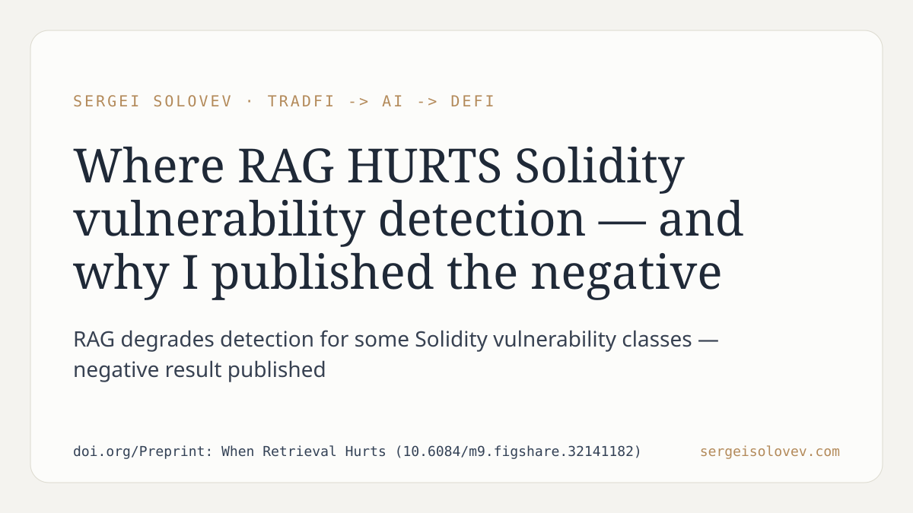

A reasonable assumption in applied LLM work: more context improves detection. For smart contract auditing, this translates into RAG pipelines — retrieve similar vulnerable patterns, feed them to the model, improve coverage. The intuition is clean.
The paper challenges that assumption. Across specific classes of Solidity vulnerabilities, retrieval-augmented generation did not improve detection — it degraded it. The effect was not uniform: some vulnerability classes were unaffected, others showed measurable regression when retrieval was applied. Publishing this negative result matters precisely because the field tends to surface only what worked.
In practice, teams building automated audit tooling cannot treat RAG as a safe default. The decision to apply retrieval should be conditioned on vulnerability class. A pipeline that performs well on one class may perform worse on another after retrieval is added. Calibration requires knowing where retrieval hurts, not just where it helps.
Full paper: https://doi.org/10.6084/m9.figshare.32141182
More context on the research: sergeisolovev.com
#RAG #SmartContracts #ML